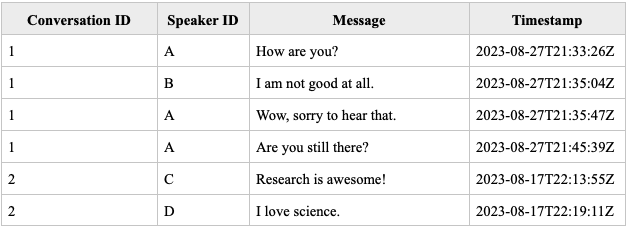

Introduction
The Team Communication Toolkit is a Python package that makes it easy for social scientists to analyze and understand text-based communication data. Our aim is to facilitate seamless analyses of conversational data — especially among groups and teams! — by providing a single interface for researchers to generate and explore dozens of research-backed conversational features.
Don’t reinvent the wheel: bootstrap analyses and build models with just a few lines of code.
Motivation
Conversations are at the center of nearly every human interaction. For social scientists, conversational data is a rich resource for unpacking a person’s cognitive process, demystifying a team’s problem-solving procedures, and providing important clues for downstream outcomes, such as whether a negotiation is likely to succeed, whether a conflict will be resolved amicably, and whether a group of collaborators is likely to achieve their goals.
But all too often, exploring conversational data involves heavy computational lift and ad-hoc design decisions. To even begin studying conversations, researchers must decide what aspect of conversations to study: should they examine how much was said, who said the content, or the manner in which it was said? What should they measure — the sentiment? The number of words? The similarity between speakers? A thorough review of the conversational literature reveals a veritable rabbit-hole of possibilities. And even when a researcher has decided on a particular dimension (or a collection of dimensions to study), they must go through the non-trivial process of defining a measurement for the dimension and building it out in software.
Finally, even when researchers build and measure their own features, what happens when other researchers need to study a similar concept in a different area? Each person needs to “reinvent the wheel,” creating redundant work and opening the possibility of making slightly different design decisions that make the study of conversations less reproducible.
What if there existed a single package did it all for you? What if, instead of combing through the literature, deciding on constructs of interest, and putting together packages to build out features on your own, a vast (and ever-increasing!) collection of conversational attributes was readily available at your fingertips?
We introduce the Team Communication Toolkit: a “one-stop shop” for exploring conversational data. Our framework is a single package encompassing a variety of common, research-backed measures of communication. These include tools like LIWC, ConvoKit, The Conversational Receptiveness Package, The Lexical Suite and much more. If you are working with conversational data for the first time, or just seeking to understand what you can possibly learn from open-ended conversations, this is the right place for you. We have collected over 100 features that you can explore, so that researchers can spend more time learning from conversations and less time worrying about how to begin studying them.
The FeatureBuilder
The heart of our tool is a class called the FeatureBuilder. This is the main way that you (as a user) should interact with the Toolkit. After you install the package, simply declare a FeatureBuilder object with the specifications you want — which dataframe you want to analyze, any custom features you need, and so on — and voila! We will generate conversational features from your data and return them to you in a CSV.
Generating Features: Utterance-, Speaker-, and Conversation-Level
Notably, not all communication features are made equal, as they can be defined at different levels of analysis. For example, a single utterance (“you are great!”) may be described as a “positive statement.” An individual who makes many such utterances may be described as a “positive person.” Finally, the entire team may enjoy a “positive conversation,” an interaction in which everyone speaks positively to each other. In this way, the same concept of positivity can be applied to three levels: the utterance, the speaker, and the conversation.
The table below provides a simple illustrative example of two conversations, presented in the Toolkit’s required input format. We require only three columns: a conversation ID, a speaker ID, and a message/text input. The timestamp column is optional, but behaviors related to the conversation’s pace cannot be measured without it.
{kind=link}
We therefore generate features at three different levels of analysis: the utterance, speaker, and conversation level. The examples below describe these features in the context of the sample table:
Utterance-level features apply to a single message within a conversation. The message, “Research is awesome!” by Speaker C is far more positive than the message, “I am not good at all,” by Speaker B.
Speaker-level features apply to a specific individual. Speaker A is more talkative than Speaker B — A speaks three times, while B speaks only once. Speaker-level features can be used to analyze patterns both within and across conversations. For example, if A participated in multiple conversations, one can aggregate A’s behavior across all of them (“what kind of person is A in general?”) as well as filter to A’s behavior within a specific conversation (“how did A speak during Conversation 1?”)
Conversation-level features apply to a single team conversation. Conversation 1 is longer (4 messages) than Conversation 2 (2 messages), while Conversation 2 is more positive (containing more positive than negative messages) than Conversation 1.
{kind=link}
The three levels of analysis are closely interconnected. In the Toolkit, Utterance-level features are calculated first. Features of utterances can then be “aggregated” into features at both the speaker and conversation level: by making more positive statements, you become a more positive person; the conversation as a whole also becomes more positive. While the positivity feature can be aggregated using a simple function (such as the mean), other utterance- and speaker-level features require more complex aggregation methods. The Gini coefficient is one such example, and it is applied to speaker level characteristics (the total number of messages, words, and characters uttered by each speaker). This aggregation generates a conversation-level feature that quantifies the “equality” in airtime during a conversation.
The driving functions for generating features at different levels are located in the Utilities. In general, you do not have to directly interact with these utilties, as the Toolkit generates utterance-, speaker-, and conversational-level features by default. However, you (as a researcher) may only only be interested a subset of the outputs, and customizable options will be made avilable in the FeatureBuilder soon.
Getting Started
Please refer to the The Team Communication Toolkit to get started. From there, we recommend reading The Basics (Get Started Here!) for a high-level overview of the requirements and parameters, and then reading through the Worked Example for a detailed walkthrough and discussion of considerations.
Feature Documentation
For technical information on the features generated by our Toolkit, please refer to the Features: Technical Documentation page.
For conceptual documentation on how our features relate to social science research, please refer to Features: Conceptual Documentation page.
Our Team
This tool is developed by Xinlan Emily Hu at the Wharton School, University of Pennyslvania, with generous funding from Wharton AI & Analytics Initiative (WAIAI).
This tool is a project of the Computational Social Science Lab at the University of Pennyslvania, led by Professor Duncan Watts.
We are deeply grateful to the many people who have directly contributed to this tool’s development. Without them, creating this resource would not be possible:
Shruti Agarwal
Yuluan Cao
Gina Chen
Priya DCosta
Nikhil Kumar
Evan Rowbotham
Yashveer Singh Sohi
Yuxuan Zhang
Amy Zheng
Eric Zhong
Helena Zhou